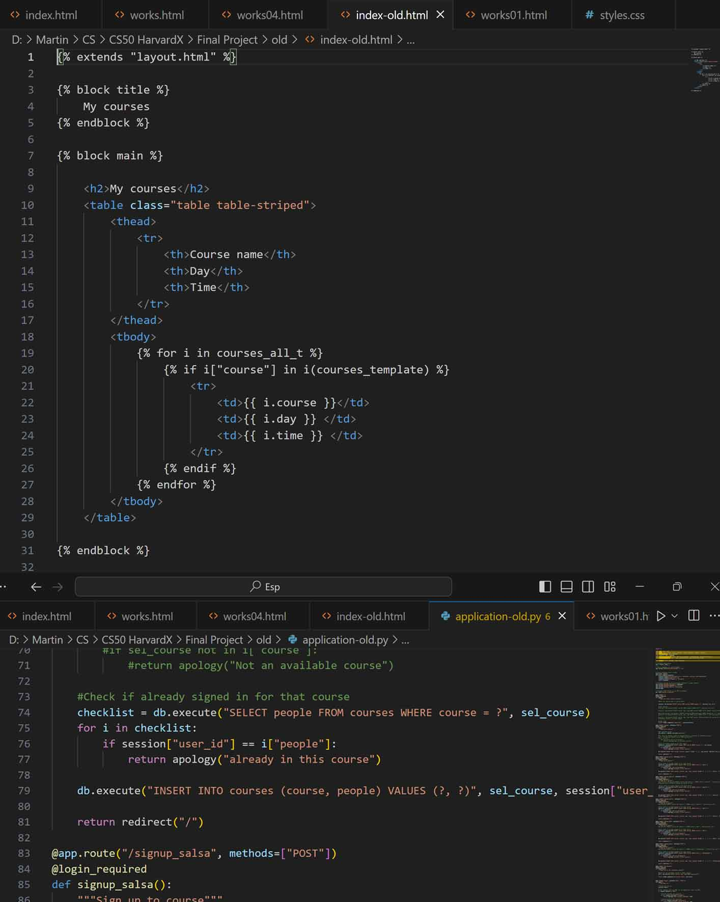
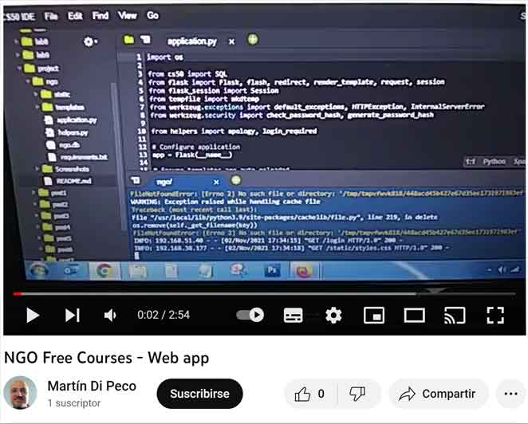

Academia de estudios
Aplicación Web desarrollada como desafío final del curso CS50 de Harvard en la plataforma edX. Maneja el alta de usuarios, inscripción a materias, chequeo de horarios.
Tecnologías utilizadas: Flask, Python, JavaScript, HTML, CSS. IDE: VS Code Online. Mini base de datos con SQLite:

Video presentación (inglés):
Repositorio del código fuente en Github:

Descargar archivo:

Volver a Proyectos